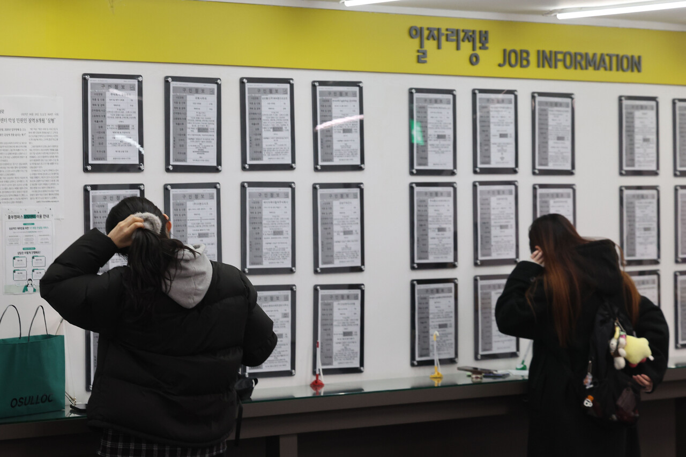
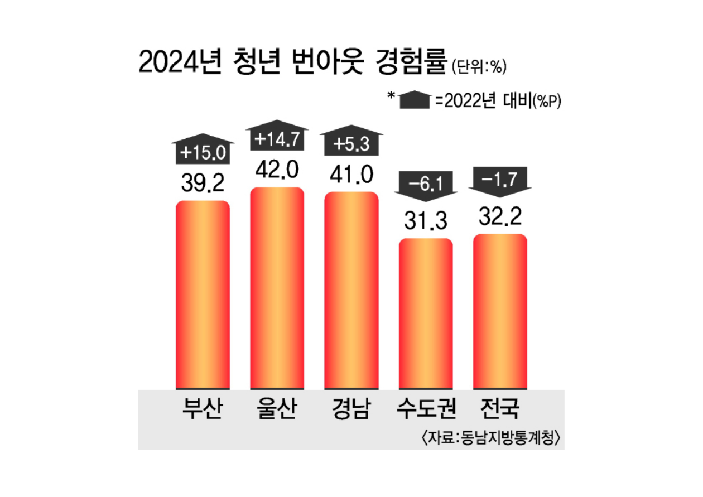

Reality Check
오늘의 부산 청년,
오늘의 부산 청년,
우리가 마주한 현실
화려한 광안대교 불빛 뒤에 가려진
부산 2030 세대의 진짜 고민들을 마주합니다.

News
투데이신문 | 2026.02.20
‘쉬었음’ 청년 70만 시대...
고착화 막을 청년정책 시급
20대에 이어 30대 ‘쉬었음’ 인구가 사상 최고치를 기록하면서 고용시장의 허리로 불리는 청년층의 동력이 크게 떨어졌다는 경고음이 커지고 있다.
Focus
중앙일보 | 2025.12.23
가상세계로 도피하는 청년
[관계빈곤의 시대]
관계 빈곤에 빠진 청년은 AI·게임·소셜미디어에서 새로운 관계를 찾는다. 현실의 인간관계 피로감을 피해 ‘안전한 가상관계’로 도피한다.

부산일보 | 2025.10.29
진로 불안에 절반은
“번아웃 경험”
치열한 스펙 경쟁과 좁아진 취업 문턱 속에서 부산 지역 청년들의 심리적 소진(Burnout) 호소가 늘어나고 있다.
무등일보 | 2026.01.20
취업을 위한 삶,
삶을 위한 취업
거창한 고민까지 가지 않더라도, 우리 스스로의 삶에 대한 고민, 그러니까 취업 이후의 삶에 대한 고민도 잘 보이지 않는다.
"당신은 어떤 '나'를 그려가고 있나요?"